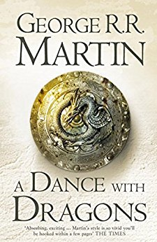

Most Popular Fiction Book
A Dance with Dragons
A Dance with Dragons is the fifth of seven planned novels in the epic fantasy series A Song of Ice and Fire by American author George R. R. Martin.
More Fiction Books here. -->
Most Popular Horror Book
A Dance with Dragons
A Dance with Dragons is the fifth of seven planned novels in the epic fantasy series A Song of Ice and Fire by American author George R. R. Martin.
More Horror Books here. -->
Most Popular History Book
A Dance with Dragons
A Dance with Dragons is the fifth of seven planned novels in the epic fantasy series A Song of Ice and Fire by American author George R. R. Martin.
More History Books here. -->
Most Popular Educative Book
A Dance with Dragons
A Dance with Dragons is the fifth of seven planned novels in the epic fantasy series A Song of Ice and Fire by American author George R. R. Martin.
More Educative Books here. -->